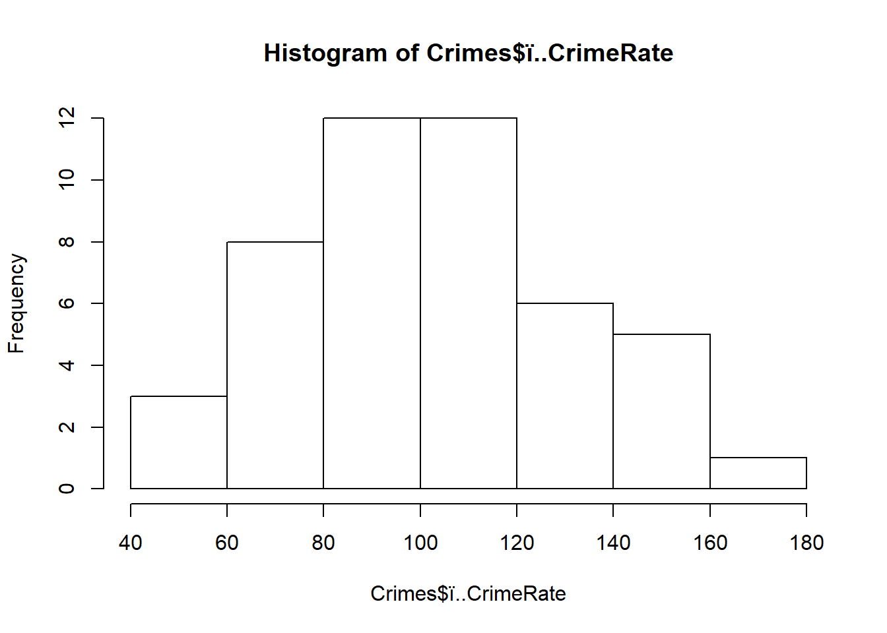
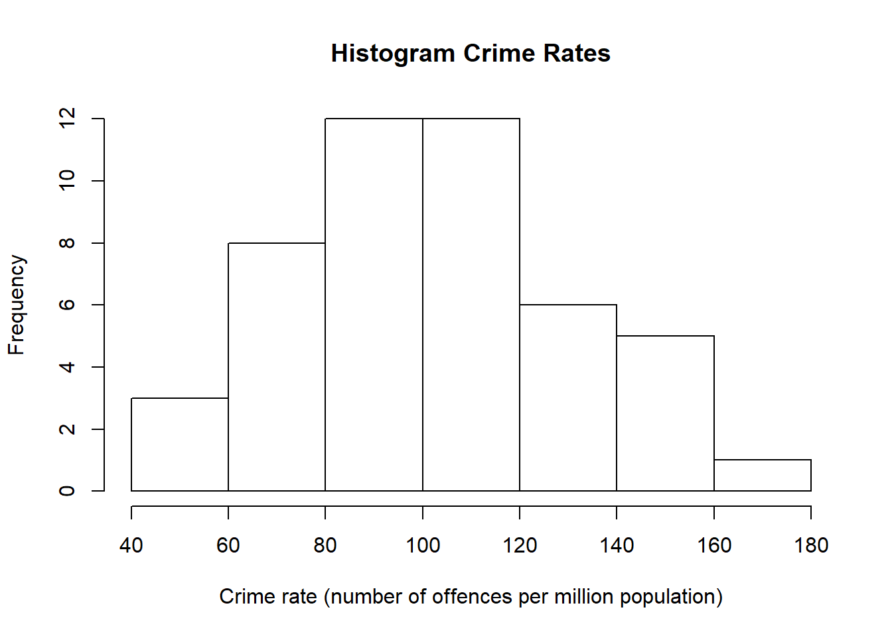
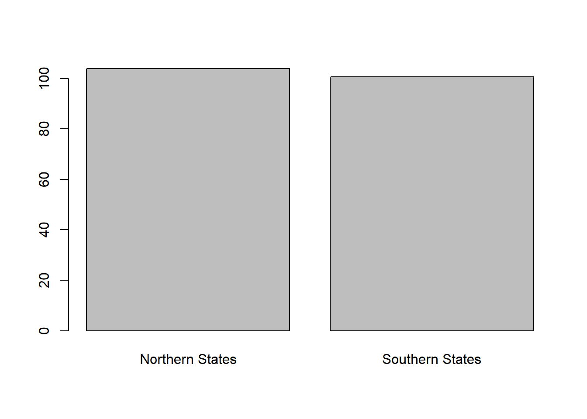
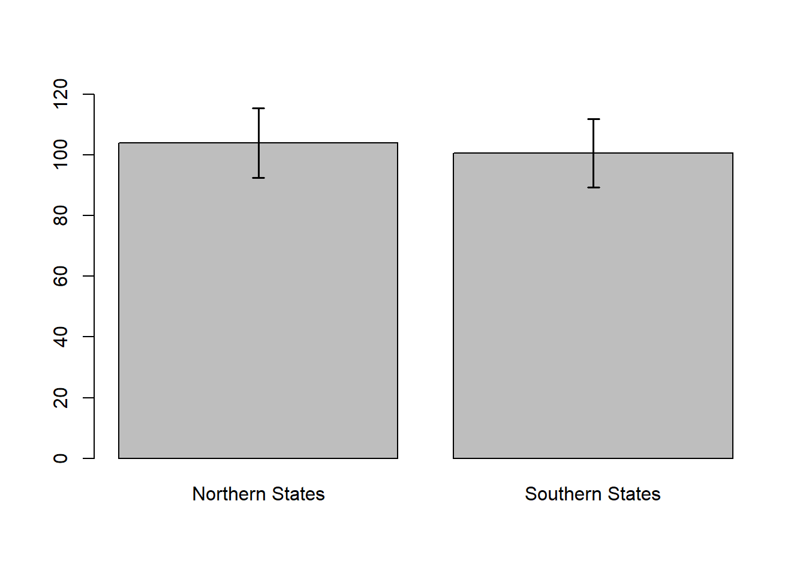
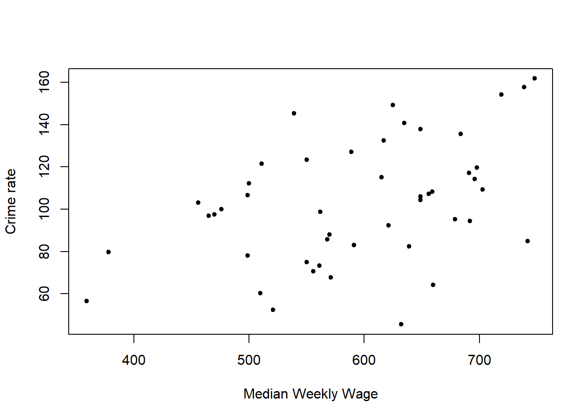
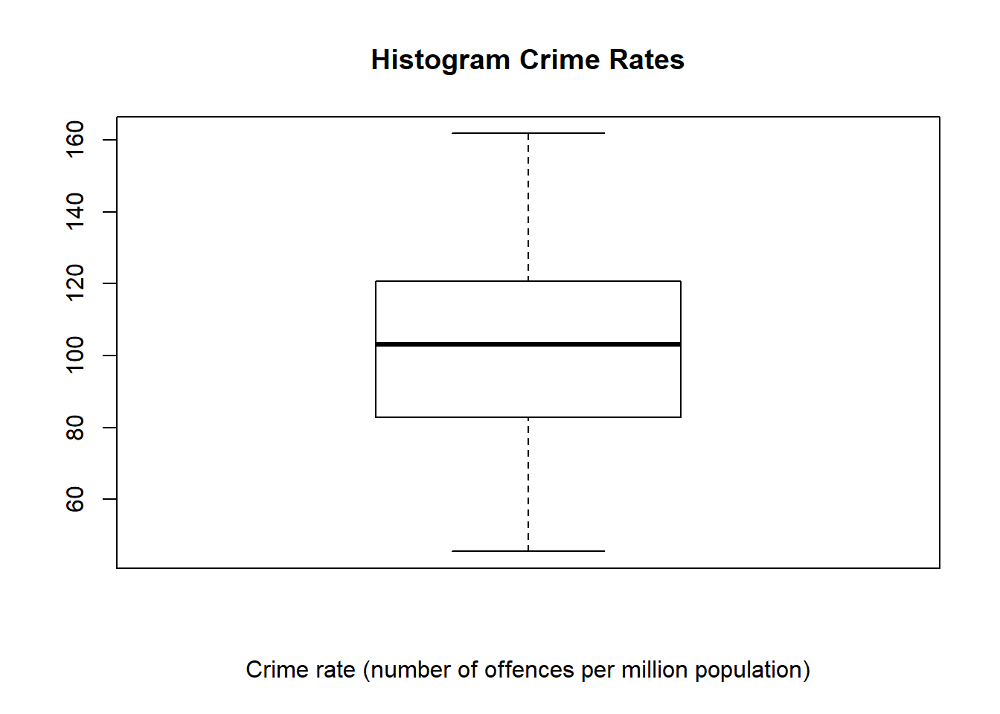
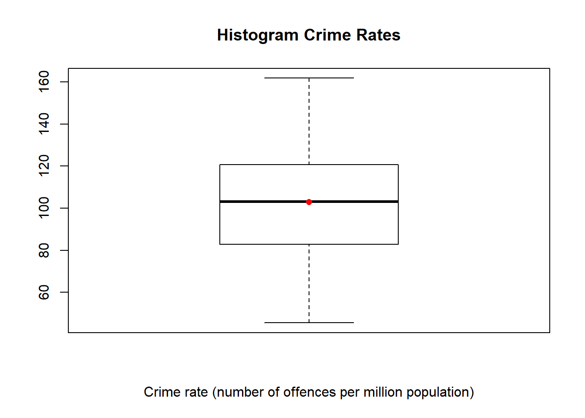
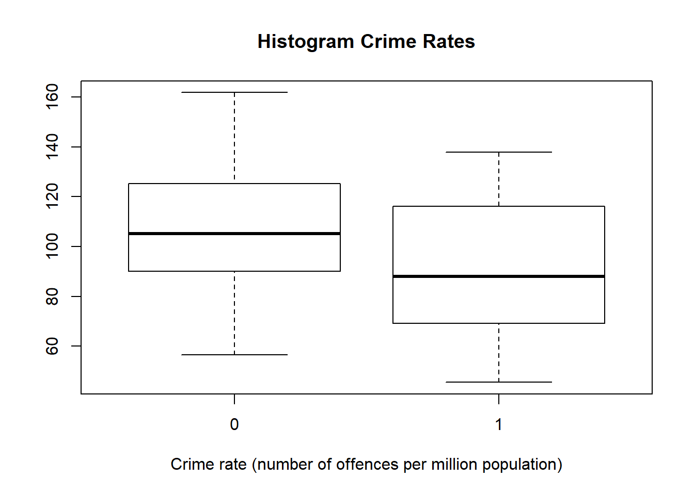
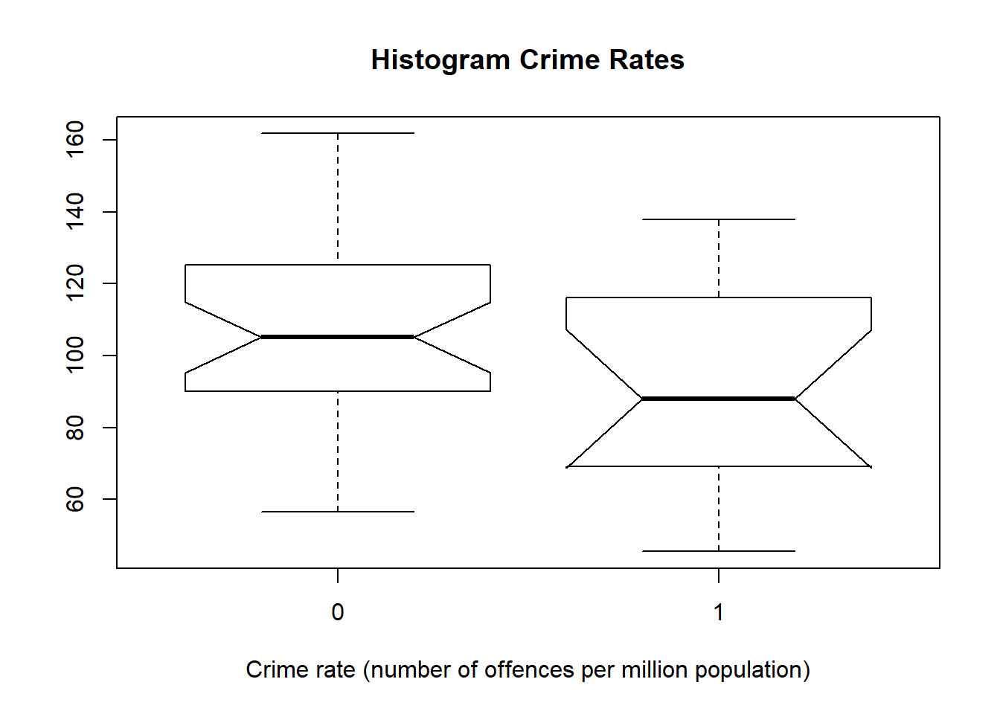

Lecture 1 - Basic R
Dr. Fabio Veronesi
April 2018
Summary
- Introduction
- Data Structures
- Data types
- Subsetting
- Importing Data
- Descriptive Statistics
- Plotting
NOTE
This document has been written using R Markdown. More info on R Markdown syntax at:
basic-writing-and-formatting-syntax
Introduction
R is a powerful object-oriented programming language, specifically designed for statistics. Object-oriented means that we can assign data to named objects and use them for computations.
It is free and open-source and can be downloaded for free at: CRAN
I also suggest to download R Studio, which makes writing code much easier: R-Studio
Data Structures
More info on data structures here: venus.ifca.unican.es
The most important data structures are vector, matrix, data.frame and lists (array is not used much) 
Vectors
Vectors are simply 1D arrays of any type, e.g. numerical, categorical or strings.
A = rnorm(n=20, mean=4, sd=1)
A## [1] 6.047778 4.741457 3.975694 3.075114 3.765888 5.100923 5.085127
## [8] 3.408311 4.540496 4.054240 4.124017 4.089556 4.355143 4.546544
## [15] 3.547939 2.769724 4.477357 4.495496 3.112502 5.062341A is a vector with 40 elements. We created this vector by using the function rnorm, which randomly samples n = 20 numerical values from a normal distribution (mean = 4, sd = 1)
length(A)## [1] 20We can obtain the length, i.e. the number of elements, in the vector using the function length. A is an object, specifically a 1D array also referred to as vector in R, and it can be used as such for analysis:
B = A + 3
B## [1] 9.047778 7.741457 6.975694 6.075114 6.765888 8.100923 8.085127
## [8] 6.408311 7.540496 7.054240 7.124017 7.089556 7.355143 7.546544
## [15] 6.547939 5.769724 7.477357 7.495496 6.112502 8.062341This expression adds the number 3 to each element of the vector, and stores this new vector into an object named B.
Matrix
Data can also be stored into more complex objects, like matrix and data.frame:
M = matrix(1:40, nrow=8, ncol=5)This line creates a 8x5 matrix, which is a 2D object with a total of 40 elements.
We can look at it using the function print:
print(M)## [,1] [,2] [,3] [,4] [,5]
## [1,] 1 9 17 25 33
## [2,] 2 10 18 26 34
## [3,] 3 11 19 27 35
## [4,] 4 12 20 28 36
## [5,] 5 13 21 29 37
## [6,] 6 14 22 30 38
## [7,] 7 15 23 31 39
## [8,] 8 16 24 32 40Please notice the way R fills the matrix. It does so by column. We can change that using the option byrow:
M = matrix(1:40, nrow=8, ncol=5, byrow=T)
print(M)## [,1] [,2] [,3] [,4] [,5]
## [1,] 1 2 3 4 5
## [2,] 6 7 8 9 10
## [3,] 11 12 13 14 15
## [4,] 16 17 18 19 20
## [5,] 21 22 23 24 25
## [6,] 26 27 28 29 30
## [7,] 31 32 33 34 35
## [8,] 36 37 38 39 40The function help can be very useful when we are not familiar with options available:
help(matrix)Data.Frame
Other important objects are data.frame:
head(iris)## Sepal.Length Sepal.Width Petal.Length Petal.Width Species
## 1 5.1 3.5 1.4 0.2 setosa
## 2 4.9 3.0 1.4 0.2 setosa
## 3 4.7 3.2 1.3 0.2 setosa
## 4 4.6 3.1 1.5 0.2 setosa
## 5 5.0 3.6 1.4 0.2 setosa
## 6 5.4 3.9 1.7 0.4 setosairis is one of the numerous datasets freely available in R that we can use for testing. The function head allows us to just look at the first few rows of the dataset.
As you can see this object has multiple columns and many rows, but the entries are not only numeric.
str(iris)## 'data.frame': 150 obs. of 5 variables:
## $ Sepal.Length: num 5.1 4.9 4.7 4.6 5 5.4 4.6 5 4.4 4.9 ...
## $ Sepal.Width : num 3.5 3 3.2 3.1 3.6 3.9 3.4 3.4 2.9 3.1 ...
## $ Petal.Length: num 1.4 1.4 1.3 1.5 1.4 1.7 1.4 1.5 1.4 1.5 ...
## $ Petal.Width : num 0.2 0.2 0.2 0.2 0.2 0.4 0.3 0.2 0.2 0.1 ...
## $ Species : Factor w/ 3 levels "setosa","versicolor",..: 1 1 1 1 1 1 1 1 1 1 ...The function str allows us to visualize the structure of any object, and it is particularly useful for data.frame. It tells us that this dataset has 150 observations (rows) and 5 variables (columns). It also tell us that the first 4 variables are numerical (num), while the last is categorical (or factorial).
Other types of variables could be logical (e.g. TRUE or FALSE), or strings (e.g. “TEST”)
List
The last data structure we are going to look at is list. This structure allows to store diverse data types:
L = list(A, M)
print(L)## [[1]]
## [1] 6.047778 4.741457 3.975694 3.075114 3.765888 5.100923 5.085127
## [8] 3.408311 4.540496 4.054240 4.124017 4.089556 4.355143 4.546544
## [15] 3.547939 2.769724 4.477357 4.495496 3.112502 5.062341
##
## [[2]]
## [,1] [,2] [,3] [,4] [,5]
## [1,] 1 2 3 4 5
## [2,] 6 7 8 9 10
## [3,] 11 12 13 14 15
## [4,] 16 17 18 19 20
## [5,] 21 22 23 24 25
## [6,] 26 27 28 29 30
## [7,] 31 32 33 34 35
## [8,] 36 37 38 39 40This list has two elements, the first is a vector while the second is a matrix.
Subsetting
We can use square brackets to extract elements from all data structures. However, the syntax changes between objects.
Vector are 1D arrays so we can extract elements just by specifying the position along the vector we want to extract, starting from 1 up to length(vector):
A[1]## [1] 6.047778This extracts the first element of the vector.
A[length(A)]## [1] 5.062341This extracts the last element, in position equal to length(A), which is 40.
For matrix and data.frame, since these are 2D objects, we need to specify both a row and a column to extract:
M[3,5]## [1] 15iris[4,4]## [1] 0.2We can also extract multiple elements:
iris[1:4, 2]## [1] 3.5 3.0 3.2 3.1This line extracts from row 1 to row 4, but only elements in column 2.
We can also extract entire rows or columns. For example:
M[1,]## [1] 1 2 3 4 5extracts the whole row 1. While:
M[,3]## [1] 3 8 13 18 23 28 33 38extracts the whole column 3.
In a data.frame we can also extract columns by name:
iris$Sepal.Length## [1] 5.1 4.9 4.7 4.6 5.0 5.4 4.6 5.0 4.4 4.9 5.4 4.8 4.8 4.3 5.8 5.7 5.4
## [18] 5.1 5.7 5.1 5.4 5.1 4.6 5.1 4.8 5.0 5.0 5.2 5.2 4.7 4.8 5.4 5.2 5.5
## [35] 4.9 5.0 5.5 4.9 4.4 5.1 5.0 4.5 4.4 5.0 5.1 4.8 5.1 4.6 5.3 5.0 7.0
## [52] 6.4 6.9 5.5 6.5 5.7 6.3 4.9 6.6 5.2 5.0 5.9 6.0 6.1 5.6 6.7 5.6 5.8
## [69] 6.2 5.6 5.9 6.1 6.3 6.1 6.4 6.6 6.8 6.7 6.0 5.7 5.5 5.5 5.8 6.0 5.4
## [86] 6.0 6.7 6.3 5.6 5.5 5.5 6.1 5.8 5.0 5.6 5.7 5.7 6.2 5.1 5.7 6.3 5.8
## [103] 7.1 6.3 6.5 7.6 4.9 7.3 6.7 7.2 6.5 6.4 6.8 5.7 5.8 6.4 6.5 7.7 7.7
## [120] 6.0 6.9 5.6 7.7 6.3 6.7 7.2 6.2 6.1 6.4 7.2 7.4 7.9 6.4 6.3 6.1 7.7
## [137] 6.3 6.4 6.0 6.9 6.7 6.9 5.8 6.8 6.7 6.7 6.3 6.5 6.2 5.9For lists, since these are complex objects, we have two levels of extraction:
L[[1]]## [1] 6.047778 4.741457 3.975694 3.075114 3.765888 5.100923 5.085127
## [8] 3.408311 4.540496 4.054240 4.124017 4.089556 4.355143 4.546544
## [15] 3.547939 2.769724 4.477357 4.495496 3.112502 5.062341The first levels, identified by 2 square brackets, extracts the element of the list (in this case element 1, which is a vector). Then we can extract a particular element from the vector adding an additional level:
L[[1]][1]## [1] 6.047778The same would be true for the second element, which is a data.frame:
L[[2]][3,5]## [1] 15In this case, since the second element has both rows and columns, the second level of extraction needs to include two numbers.
Importing Data
In this course we will use data freely available on-line, which can be downloaded from: sheffield.ac.uk. A short description for each dataset is also available.
In case we have data stored locally, we first need to specify our working directory so that R knows where to load and save data. We can do that via the function setwd:
setwd("J:/Teaching_Harper/Advanced Research Methods - E7004/Possible Datasets")Please notice the forward slash (/) instead of the back slash we would normally use. Another way is go to Session->Set Working Directory directly in R Studio. Now we can import our data. The easiest way to import tables is from csv files.
This can also be done directly from the website:
Crimes = read.csv("https://www.sheffield.ac.uk/polopoly_fs/1.569434!/file/stcp-Rdataset-Crime.csv")
str(Crimes)## 'data.frame': 47 obs. of 27 variables:
## $ ï..CrimeRate : num 45.5 52.3 56.6 60.3 64.2 67.6 70.5 73.2 75 78.1 ...
## $ Youth : int 135 140 157 139 126 128 130 143 141 133 ...
## $ Southern : int 0 0 1 1 0 0 0 0 0 0 ...
## $ Education : num 12.4 10.9 11.2 11.9 12.2 13.5 14.1 12.9 12.9 11.4 ...
## $ ExpenditureYear0 : int 69 55 47 46 106 67 63 66 56 51 ...
## $ LabourForce : int 540 535 512 480 599 624 641 537 523 599 ...
## $ Males : int 965 1045 962 968 989 972 984 977 968 1024 ...
## $ MoreMales : int 0 1 0 0 0 0 0 0 0 1 ...
## $ StateSize : int 6 6 22 19 40 28 14 10 4 7 ...
## $ YouthUnemployment : int 80 135 97 135 78 77 70 114 107 99 ...
## $ MatureUnemployment : int 22 40 34 53 25 25 21 35 37 27 ...
## $ HighYouthUnemploy : int 1 1 0 0 1 1 1 1 0 1 ...
## $ Wage : int 564 453 288 457 593 507 486 487 489 425 ...
## $ BelowWage : int 139 200 276 249 171 206 196 166 170 225 ...
## $ CrimeRate10 : num 26.5 35.9 37.1 42.7 46.7 47.9 50.6 55.9 61.8 65.4 ...
## $ Youth10 : int 135 135 153 139 125 128 153 143 153 134 ...
## $ Education10 : num 12.5 10.9 11 11.8 12.2 13.8 14.1 13 12.9 11.2 ...
## $ ExpenditureYear10 : int 71 54 44 41 97 60 57 63 54 47 ...
## $ LabourForce10 : int 564 540 529 497 602 621 641 549 538 600 ...
## $ Males10 : int 974 1039 959 983 989 983 993 973 968 1024 ...
## $ MoreMales10 : int 0 1 0 0 0 0 0 0 0 1 ...
## $ StateSize10 : int 6 7 24 20 42 28 14 11 5 7 ...
## $ YouthUnemploy10 : int 82 138 98 131 79 81 71 119 110 97 ...
## $ MatureUnemploy10 : int 20 39 33 50 24 24 23 36 36 28 ...
## $ HighYouthUnemploy10: int 1 1 0 0 1 1 1 1 1 1 ...
## $ Wage10 : int 632 521 359 510 660 571 556 561 550 499 ...
## $ BelowWage10 : int 142 210 256 235 162 199 176 168 126 215 ...Please notice the name of the first variable ï..CrimeRate. This sometimes happens in R, which probably has some issues with this particular file. It is important to notice this, because we always need to use accurate variable names in R, otherwise the script will not work. We can find the description of the dataset at this link: Crime_data_summary
Even though reading csv is the easiest way to import data, there are many other formats of data that can be imported into R (e.g. Excel sheet). To find out more on how to import different formats of data please look at the links below:
Descriptive Statistics
Descriptive statistics is a basic technique that is used to describe a dataset.
This technique relies on indexes to capture important features of the dataset, such as mean and standard deviation, which will help us to compare it with other data.
Centrality
The most popular index of centrality is the mean, or arithmetic average:
\(\displaystyle\bar{y} = \frac{1}{n} \times \sum_{i=1}^{n} y_i\)
where \(\bar{y}\) is the mean of a variable \(y\), and \(n\) is the number of elements in \(y\).
Note
The previous equation was written using the Latex syntax. More info here: Latex Equation Reference
The function mean can be used in R to compute the arithmetic average:
mean(Crimes$ï..CrimeRate)## [1] 102.8085Another useful measure of centrality is the median, which is defined as the middle value of a series of numbers, listed in numerical order. We can simply compute it using the function median in R:
median(Crimes$ï..CrimeRate)## [1] 103Spread
The Variance is a measure of spread and indicates the average amount of dispersion, i.e. distance from the mean, of each value in a dataset. It can be simply computed as follows:
\(\displaystyle s^2 = \frac{1}{n-1} \times \sum_{i=1}^{n} {(y_i - \bar{y})}^2\)
By definition, the variance is sum of the square differences between each observation \(y_i\) and the mean \(\bar{y}\), divided by the number of observations minus 1.
In R, the variance can be simply computed as follows:
var(Crimes$ï..CrimeRate)## [1] 834.8208The Standard Deviation (\(s\)) is the square root of the variance:
sd(Crimes$ï..CrimeRate)## [1] 28.89327Summary
Sometimes, instead of computing indexes for a single variable we are more interested in looking at the whole dataset at once. We can do that with the function summary:
summary(Crimes)## ï..CrimeRate Youth Southern Education
## Min. : 45.5 Min. :119.0 Min. :0.0000 Min. :10.00
## 1st Qu.: 82.7 1st Qu.:130.0 1st Qu.:0.0000 1st Qu.:11.55
## Median :103.0 Median :136.0 Median :0.0000 Median :12.40
## Mean :102.8 Mean :138.6 Mean :0.3404 Mean :12.39
## 3rd Qu.:120.7 3rd Qu.:146.0 3rd Qu.:1.0000 3rd Qu.:13.20
## Max. :161.8 Max. :177.0 Max. :1.0000 Max. :15.10
## ExpenditureYear0 LabourForce Males MoreMales
## Min. : 45.0 Min. :480.0 Min. : 934.0 Min. :0.0000
## 1st Qu.: 62.5 1st Qu.:530.5 1st Qu.: 964.5 1st Qu.:0.0000
## Median : 78.0 Median :560.0 Median : 977.0 Median :0.0000
## Mean : 85.0 Mean :561.2 Mean : 983.0 Mean :0.1915
## 3rd Qu.:104.5 3rd Qu.:593.0 3rd Qu.: 992.0 3rd Qu.:0.0000
## Max. :166.0 Max. :641.0 Max. :1071.0 Max. :1.0000
## StateSize YouthUnemployment MatureUnemployment HighYouthUnemploy
## Min. : 3.00 Min. : 70.00 Min. :20.00 Min. :0.0000
## 1st Qu.: 10.00 1st Qu.: 80.50 1st Qu.:27.50 1st Qu.:0.0000
## Median : 25.00 Median : 92.00 Median :34.00 Median :0.0000
## Mean : 36.62 Mean : 95.47 Mean :33.98 Mean :0.3191
## 3rd Qu.: 41.50 3rd Qu.:104.00 3rd Qu.:38.50 3rd Qu.:1.0000
## Max. :168.00 Max. :142.00 Max. :58.00 Max. :1.0000
## Wage BelowWage CrimeRate10 Youth10
## Min. :288.0 Min. :126.0 Min. : 26.50 Min. :120.0
## 1st Qu.:459.5 1st Qu.:165.5 1st Qu.: 76.35 1st Qu.:134.0
## Median :537.0 Median :176.0 Median :103.50 Median :139.0
## Mean :525.4 Mean :194.0 Mean :102.07 Mean :140.5
## 3rd Qu.:591.5 3rd Qu.:227.5 3rd Qu.:130.25 3rd Qu.:151.5
## Max. :689.0 Max. :276.0 Max. :178.20 Max. :164.0
## Education10 ExpenditureYear10 LabourForce10 Males10
## Min. :10.10 Min. : 41.00 Min. :497.0 Min. : 935.0
## 1st Qu.:11.55 1st Qu.: 58.50 1st Qu.:538.0 1st Qu.: 969.5
## Median :12.40 Median : 73.00 Median :563.0 Median : 983.0
## Mean :12.40 Mean : 80.23 Mean :565.5 Mean : 986.9
## 3rd Qu.:13.25 3rd Qu.: 97.00 3rd Qu.:599.0 3rd Qu.: 994.0
## Max. :15.20 Max. :157.00 Max. :641.0 Max. :1079.0
## MoreMales10 StateSize10 YouthUnemploy10 MatureUnemploy10
## Min. :0.0000 Min. : 3.0 Min. : 71.00 Min. :15.00
## 1st Qu.:0.0000 1st Qu.: 11.0 1st Qu.: 82.00 1st Qu.:28.00
## Median :0.0000 Median : 25.0 Median : 93.00 Median :34.00
## Mean :0.2128 Mean : 37.7 Mean : 97.45 Mean :33.36
## 3rd Qu.:0.0000 3rd Qu.: 43.0 3rd Qu.:108.50 3rd Qu.:39.00
## Max. :1.0000 Max. :180.0 Max. :143.00 Max. :59.00
## HighYouthUnemploy10 Wage10 BelowWage10
## Min. :0.0000 Min. :359.0 Min. :126.0
## 1st Qu.:0.0000 1st Qu.:530.0 1st Qu.:165.0
## Median :0.0000 Median :615.0 Median :182.0
## Mean :0.4043 Mean :594.6 Mean :193.0
## 3rd Qu.:1.0000 3rd Qu.:659.5 3rd Qu.:229.5
## Max. :1.0000 Max. :748.0 Max. :257.0This function returns several important information for all the variables in the data.frame Crimes. Beside mean and median, it also reports the minimum and maximum values, and the first and third quartiles, which are useful to understand the shape of the distribution.
Quantiles
Quantiles are just cut points that divide the probability distribution into equal probability intervals:

Source: mathspace.co
In this example, the \(78^{th}\) percentile is the point below which \(78%\) of observations lie. Important for statistics is the division of the distribution into four parts, in this case we talk about quartiles. These are important because they allow to measure spread for non-normal distribution: using the distance between first and third quartiles (interquartile range):

Source: wikipedia
The interquartile range can be easily computed in R with the function IQR:
IQR(Crimes$ï..CrimeRate)## [1] 37.95Plotting
The final part of this lecture is dedicated to plotting. Plots are extremely important because they allow us to graphically represent our data, which is extremely important.
There are many useful plots that we will use throughout the course. In particular we will look at histograms and box-plots, which allows us to visualise and compare distributions; bar-charts, which are useful to develop hypothesis particularly for categorical data; and scatterplots, which are very useful to understand the relation between variables.
Histograms
Histograms are plots designed to represent distributions. To create a histogram we simply need to divide our data into non-overlapping “bins”, meaning small intervals, which will be plotted on the X axis. Then we count the number of values that fall into each bin, and this number is plotted on the Y axis.
Let’s look at an example, again using the ï..CrimeRate variable:
hist(Crimes$ï..CrimeRate)
As you can see the histogram has split the data into 7 bins, and plot the frequency (i.e. the number of values within each bin) on the Y axis.
We can add elements to this plots by changing title and the label for the X axis, with the options main and xlab:
hist(Crimes$ï..CrimeRate, main="Histogram Crime Rates", xlab="Crime rate (number of offences per million population)")
As mentioned, histograms are very useful to check the shape of the distribution. For example, in this case we can see that the distribution is very close to normal, with its typical bell shape. This is extremely useful particularly when we will start looking at statistical tests. In fact, many tests are specifically designed to deal only with normally distributed data.
Bar Charts
Bar charts are very useful when we need to compare groups. In the dataset Crimes there are variables that are binary, i.e. either 0 or 1. For example, Southern divides crimes reported in Southern (1) and Northern (0) states. Let’s say we want to compare average crimes in both areas. For this task bar charts are the right tools.
Before we can plot the data we need to compute averages for both categories in the variable Southern. We can do it with the function tapply:
Mean = tapply(X=Crimes$ï..CrimeRate, INDEX=Crimes$Southern, FUN=mean)
Mean## 0 1
## 103.9065 100.6813The function tapply, applies a function (FUN) to a continuous variable (X), divided by groups (INDEX). Once we have the mean we can plot bars using barplot:
barplot(Mean, names.arg=c("Northern States", "Southern States"))
It seems Northern states have slightly more crimes.
We can provide more details on the plot by creating error bars, for example using the standard error of the mean. The standard error is computed as follows:
\(\displaystyle SEM = \frac{s}{\sqrt{n}}\)
where \(s\) is the standard deviation, and \(n\) is the number of samples.
In base R there is no function to compute the standard error, but we can create one:
SEM = function(x){sd(x) / sqrt(length(x))}This simple function will accept a vector x, as only input. Then it will compute the standard error as a ratio between the standard deviation (sd), and the square root (sqrt) of the number of elements (length) of the vector x. Now that we have a function we can again use tapply, to compute standard errors for each category:
SEM.STATES = tapply(X=Crimes$ï..CrimeRate, INDEX=Crimes$Southern, FUN=SEM)
SEM.STATES## 0 1
## 5.739746 5.647058These can be added to the plot with segments and arrows. However, we first need to recall the plot and save it into an object:
BC_PLOT = barplot(Mean, names.arg=c("Northern States", "Southern States"), ylim=c(0,120))The object BC_PLOT now contains the plot, and in particular the coordinates of the two bars. We also added the option ylim, to manually set the range of the Y axis. This way we can make sure the error bars are fully visible.
BC_PLOT## [,1]
## [1,] 0.7
## [2,] 1.9With these numbers we can specify where to insert the error bars, as twice the standard error of the mean:
BC_PLOT = barplot(Mean, names.arg=c("Northern States", "Southern States"), ylim=c(0,120))
segments(x0=BC_PLOT, y0=Mean - (2*SEM.STATES), x1=BC_PLOT, y1=Mean + (2*SEM.STATES), lwd=1.5)
arrows(x0=BC_PLOT, y0=Mean - (2*SEM.STATES), x1=BC_PLOT, y1=Mean + (2*SEM.STATES), lwd=1.5, angle=90, code=3, length=0.05)
To know more about the code in the last two functions please refer to: www.r-bloggers.com/building-barplots-with-error-bars/
Plotting confidence intervals around the mean is extremely useful since it may provide good indications of statistical differences between groups. In fact, SEM is used in inferential statistics to compare groups. If two error bars are overlapping there are good chances that with a formal test the two groups will not result statistically different. This is something we can use to formulate our hypothesis before applying any statistical test.
Scatterplot
Scatterplots allows us to visualise the relation between two continuous variables. For example, let’s say we want to visualise the relation between Crime rate and Wages, we can do that simply by:
plot(ï..CrimeRate ~ Wage10, data=Crimes, pch=20, xlab="Median Weekly Wage", ylab="Crime rate")
It seems there is a positive correlation between the two, i.e. when one increases the other also increases. This sort of plots is extremely useful in hypothesis testing, since it allows us to immediately figure out that some variables may be driving the variance we see in our target variable, in this case Crime rates.
Box-Plots
Box-Plots are another way to represent distributions, this time using quartiles. They are also very useful to compare distributions.
First of all, let’s look at the R code to generate box-plots:
boxplot(Crimes$ï..CrimeRate, main="Histogram Crime Rates", xlab="Crime rate (number of offences per million population)")
Box-plots are a clever way of representing distributions. They feature a box, which ranges from the first (Q1) to the third quartile (Q3), thus representing the interquartile range (measure of spread valid also for non-normal distributions). Inside there is a black line that corresponds to the median. Then we have the two whiskers, which extend up to a distance of 1.5 times the interquartile range below Q1 and above Q3. Outside this range we sometimes see dots that are considered outliers.
The image below illustrates how to interpret box-plots:

Source: lsc.studysixsigma.com
We can increase the amount of information displayed by adding a red dot on the mean value. This can be done with the function points:
boxplot(Crimes$ï..CrimeRate, main="Histogram Crime Rates", xlab="Crime rate (number of offences per million population)")
points(mean(Crimes$ï..CrimeRate), pch=16, col="red")
As you can see the function points is written after the call to create the plot. Moreover, within the call to points we have two more options: pch and col. The first, pch, is used to change the symbol used for the dot and it can be any of the symbols below:

pch symbols, source: isu.r-forge.r-project.org
The option col is used to change the colour of the symbol, which by default is black. We can either write the colour: e.g. red, green, yellow. Alternatively, we can select more advanced colours from the range below:

Author: Earl F. Glynn (2005)
Box plots are a very good way of comparing distributions of different groups. We can do that including a formula, for example specifying that we want to plot distributions of Crime Rate as a function of Youth unemployment:
boxplot(Crimes$ï..CrimeRate ~ Crimes$HighYouthUnemploy, main="Histogram Crime Rates", xlab="Crime rate (number of offences per million population)")
Box plots can be used with any distribution. However, their role become very important when we are dealing with non-normal data. In fact, with normal distributions we can simply use a bar-chart to plot the mean values of each group, and an error bar with the confidence interval (computed as twice the standard error of the mean). However, for data that do not fit a normal distribution this is not possible and this is where box plot become very useful. In fact, using the interquartile range (IQR) we can compute confidence intervals around the median, with the following equation:
\(CI_{Median} = Median \pm 1.57 \times \frac{IQR}{\sqrt{n}}\)
Confidence intervals around the median can be plotted in R as notches, with the option notch:
boxplot(Crimes$ï..CrimeRate ~ Crimes$HighYouthUnemploy, notch=T, main="Histogram Crime Rates", xlab="Crime rate (number of offences per million population)")
The interpretation is very similar to the confidence intervals around the mean. If the two notches are overlapping there are good chances that with a formal test the two groups will not result statistically different.
Conclusions
In this lecture we learned the basics of the R language, such as importing and subsetting data. We also started learning useful technique to explore our dataset, both in terms of descriptive indexes, and by visualising our variables.
References
Material to implement what we discussed during lectures can be downloaded from my OneDrive.
I also developed a video tutorial for Pack Publishing, which again students can download from OneDrive:
Homework
Homework are meant to help you during the learning process. They will not be marked and they are not mandatory. However, if you have time and you want to do some additional work to better understand the R language these are some things you can try. Please save all your homework, from each day, into a single file: name_surname_StudentID.R
Please identify each day with specific comments. A comment in R can be included with the hash-tag (#):
#Comment: you can write whatever neccesary for me to understand your reasoningAt the end of the module you can send the R file to me: fveronesi@harper-adams.ac.uk
You can find the list of homework below:
From this page, download the Diet dataset and place it in a folder of your choice. Then set the working directory pointing to the same folder where you downloaded the dataset. Finally load the dataset using
read.csv.Subset the dataset by gender (be careful for the NA values) and compute the mean values for the variable
weight6weeksfor both subsets.Create a bar-chart using the two subsets.
Create a scatterplot between
pre.weightandweight6weeks.Comment the scatterplot and the relation between variables.
Copyright © 2018 Dr. Fabio Veronesi - Creative Commons Attribution 3.0 Unported